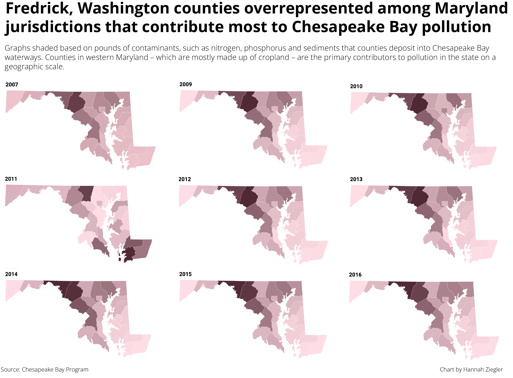

Exploring pollution in the Chesapeake Watershed
The Chesapeake Bay Watershed is in trouble.
For years, the geographic area tasked with maintaining the watershed has shoveled pollutants and harmful chemicals into the waterways that feed into the Chesapeake Bay.
Now, the vast majority of the bay is considered contaminated from major pollutants in some way.
The Chesapeake dead zone is an area within the watershed that has little to no oxygen. It results from polluted runoff entering the water and feeding algae, which drives the growth of blooms that die and decompose, according to the Chesapeake Bay Foundation. Increased algae blooms like this removes oxygen from surrounding waters faster than it can be replenished, according to the Chesapeake Bay Foundation.
Plant and animal life are not equipped to survive in l0w-oxygen environments. When a dead zone is present, marine life like fish and crabs have to move away from these areas, according to the Chesapeake Bay Foundation.

In recent years, sea levels and temperatures have risen at faster rates across the country. The Chesapeake Bay is no exception to this trend.
In the last century, air temperatures have increased in most parts of the watershed by anywhere from 0.4 to 2.5 degrees Fahrenheit, according to the National Oceanic and Atmospheric Administration.
In the last 30 years, the average water temperature in the Chesapeake has also increased by 1.8 degrees Fahrenheit. Experts predict the bay will see a sea level rise between 1.3-5.2 feet within the next century, according to the National Oceanic and Atmospheric Administration. These changes pose threats to the thousands of living organisms that rely on the Chesapeake Bay to provide crucial protection – including humans.
Maryland has also witnessed warmer average air temperatures in the 21st century, with the state only experiencing one month from 2000-present where the average temperature was colder than the state’s 20th-century average.
According to the Chesapeake Bay Foundation, there are three major contributors to the poor health of the Chesapeake Bay – nitrogen, phosphorus and sediment.
High nitrogen and phosphorus levels cause massive algae growth in the water, which blocks sunlight from reaching grasses that serve as food and habitat. Bacteria play a role in consuming these algaes once they die, taking oxygen in the water away from other organisms that need it for survival and creating dead zones.
Excessive amounts of nitrogen and phosphorus come from fertilizers, wastewater and runoff from farms, among other things, according to the Chesapeake Bay Foundation.
Sediment, on the other hand, turns the water in the Chesapeake cloudy and blocks sunlight from reaching aquatic grasses, according to the Chesapeake Bay Foundation.. This causes species that live at the bottom of the bay to be smothered when sediment does settle, according to the Chesapeake Bay Foundation.
Forest and farmland development takes away the watershed’s natural ability to filter pollutants before they reach the streams and rivers that feed into the bay.
“As a result, far too much of these pollutants wash off the land and down the Bay's freshwater tributaries, dramatically diminishing the Bay's dissolved oxygen levels, resulting in huge ‘dead zones’ where aquatic denizens cannot live,” according to the Chesapeake Bay Foundation.
Agricultural producers and storm water in the Chesapeake watershed account for the vast majority of pollution in the bay today.
Runoff and contaminants can impair the quality of surface and groundwater. When fertilizers and pesticides don’t remain in the landscape where they are applied, runoff and infiltration transport these contaminants to local Chesapeake tributaries, according to the U.S. Geological Survey.
All waterways around the world are subject to the fragile balance between maintaining agricultural productivity and protecting natural resources from climate change. But states in the Chesapeake watershed, such as Maryland, face a difficult task of mitigating the consequences of harmful farming practices across state lines.
Poor irrigation practices in states across the watershed, such as overwatering crops, promotes erosion and pushes pollution into rivers and streams, according to the Chesapeake Bay program. Stormwater runoff also carries pollutants from streets, yards and farms down storm drains and into local rivers and streams. This is especially prevalent in Maryland.
For example, jurisdictions in Maryland with larger agricultural enterprises, such as Frederick and Washington counties, have a larger contribution to the overall pollution from nitrogen, phosphorus and sediment in the Chesapeake Bay over time compared to neighboring locales.
A particular case study involving how climate change and adjustments to the bay’s ecosystem affects wildlife comes from examining blue crab populations.
The Chesapeake Bay has maintained the largest blue crab harvest for more than a century. The crabs are considered the “most iconic” Chesapeake Bay species, according to the Chesapeake Bay Foundation. They typically inhabit the bay’s underwater grass beds and support one of the watershed’s most valuable commercial fisheries.
In Maryland alone, the commercial blue crab industry earnings have had at least $45 million in value for the past decade, according to the Chesapeake Bay Foundation. Crabs also hold massive cultural value in watershed states and play a pivotal role in upholding the Chesapeake’s food chain.
But few species have struggled more with climate change-inflicted changes to the Chesapeake ecosystem than the blue crab. Last year, the population dropped from almost 282 million in 2021 to 227 million, according to data collected by the Chesapeake Bay Foundation. That’s the lowest blue crab population recorded since the blue crab dredge survey began 33 years ago.
For the last two decades, the number of blue crabs in the Chesapeake Bay has lingered below the previous long-term average count. From the mid-1990s to the late 2000s, the Chesapeake Bay saw a “dramatic decline” in its blue crab population because of overfishing, according to the Chesapeake Bay Program.
All crabs have seen declines underwater grass abundance because of warmer waters and pollution, which contributes to habitat loss among crabs in a major way, the program added.
The most concerning trend, experts say, is the decline in population of female blue crabs who are able to spawn. Combined with a severe population decline for male crabs of all sizes, the future of the blue crab ecosystem could be at risk within the next century if humans do not follow through on major habitat and population rehabilitation programs.

Currently, the Chesapeake Bay Program and other environmental agencies are working to make water quality improvements, underwater grass restoration and fishery management techniques available to maintain the Chesapeake’s blue crab populations.